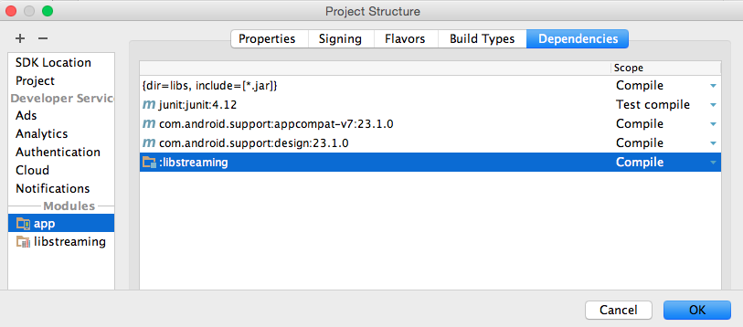

Emisión de medios¶
Vamos a estudiar en esta sesión la forma en la que podemos emitir vídeo desde los dispositivos móviles a través de Internet o a otros dispositivos.
Publicación en Wowza¶
El servidor Wowza, además de publicar contenido bajo demanda (VOD), nos permite realizar emisiones en directo. Para ello deberemos enviar desde el cliente un stream RTSP o RTMP, y el servidor de encargará de difundirlo al igual que en el caso del VOD (con HLS para dispositivos iOS, y con RTSP para Android).
En la sección Incoming Publishers de la aplicación live de Wowza podemos ver los datos que deberemos utilizar en la aplicación de emisión para publicar vídeo en directo en Wowza:

De esta pantalla necesitaremos la siguiente información para poder publicar vídeo en el servidor:
- IP del servidor
- Puerto del servicio de streaming
- Nombre de la aplicación de streaming (
livepor defecto) - Usuario y password del usuario publisher (deberemos recordar los datos del usuario que introdujimos al configurar Wowza).
A continuación veremos cómo podemos publicar en esta aplicación utilizando una aplicación Android.
Tecnologías para la emisión de vídeo¶
Aunque el soporte para la emisión de medios de momento no forma parte de los SDKs de las principales plataformas móviles, podemos encontrar diferentes librerías y tecnologías que lo proporcionan. Vamos a revisar algunas de ellas:
- libstreaming: Librería open source para Android que nos permite emitir vídeo vía RTSP.
https://github.com/fyhertz/libstreaming
- Media Library for iOS: Librería open source para iOS que nos permite emitir vídeo vía RTMP.
https://github.com/slavavdovichenko/MediaLibDemos3x
- Adobe AIR: Esta tecnología nos proporciona un SDK con el que podemos crear aplicaciones multiplataforma. Dentro de dicho SDK contamos con clases para la reproducción y captura de vídeo, y además para su emisión de forma sencilla mediante RTMP.
http://www.adobe.com/devnet/air.html
- Kickflip: Plataforma para la emisión de vídeo desde dispositivos iOS y Android. Nos proporciona un SDK open source sencillo de utilizar que emite el vídeo a través de sus propios servidores y mediante sus propios protocolos.
https://kickflip.io
Emisión desde Android con libstreaming¶
Podemos utilizar la librería libstreaming para emitir vídeo RTSP desde un dispositivo Android:
https://github.com/fyhertz/libstreaming
Instalación y configuración de libstreaming¶
Seguiremos los siguientes pasos para importar la librería en Eclipse:
-
Descargar la librería libstreaming.
-
Seleccionar File > New > Import module….
-
Seleccionar el directorio donde se encuentra libstreaming.
-
Deja todas las opciones por defecto del asitente.
-
Pulsar Finish.
Tras ejecutar el asistente es posible que haya que modificar el fichero
build.gradledelibstreamingpara que utilice una versión de las build tools (buildToolsVersion) que tengamos instalada. Tras hacer la corrección, se deberá volver a sincronizar con gradle.
Una vez tengamos la librería como módulo del proyecto, tendremos que añadirla como dependencia del módulo de nuestra aplicación para poder emitir desde ella vía streaming. Para ello seguiremos los siguientes pasos:
- Seleccionamos File > Project Structure....
- Seleccionamos el módulo de nuestra aplicación (por ejemplo
app) y vamos a la pestaña Dependencies. - Añadimos una dependencia de módulo (Module Dependency) y seleccionamos
:libstreaming.

En el build.gradle del módulo de nuestra aplicación veremos la dependencia de la siguiente forma:
dependencies {
compile fileTree(dir: 'libs', include: ['*.jar'])
testCompile 'junit:junit:4.12'
compile 'com.android.support:appcompat-v7:23.1.0'
compile 'com.android.support:design:23.1.0'
compile project(':libstreaming')
}
Con esto ya podremos utilizar la librería libstreaming desde nuestro proyecto. Al empaquetar la aplicación, la librería será incluida con ella.
Vamos a ver a continuación cómo utilizar esta librería en el código de nuestra aplicación.
Uso de la librería libstreaming¶
En primer lugar, necesitaremos solicitar los siguientes permisos para poder utilizar la librería:
<uses-permission android:name="android.permission.INTERNET" />
<uses-permission android:name="android.permission.WRITE_EXTERNAL_STORAGE" />
<uses-permission android:name="android.permission.RECORD_AUDIO" />
<uses-permission android:name="android.permission.CAMERA" />
En la interfaz necesitaremos contar con una vista de tipo SurfaceView para poder realizar el preview de la cámara. Suponemos que en el layout de la actividad hemos incluido esta vista con un identificador R.id.surfaceView.
En el onCreate de nuestra actividad obtenemos el SurfaceView y el holder de dicha superficie:
mSurfaceView = (SurfaceView)findViewById(R.id.surfaceView);
mHolder = mSurfaceView.getHolder();
mHolder.addCallback(this);
La actividad deberá implementar la interfaz SurfaceHolder.Callback.
¡CUIDADO! La vista
SurfaceViewque debemos utilizar no es la de Android, sino una versión alternativa suministrada por libstreaming, que se encuentra en el paquetenet.majorkernelpanic.streaming.gl. Por lo tanto, para incluir esta vista en el layout deberemos indicar su nombre completo:<net.majorkernelpanic.streaming.gl.SurfaceView ... />
Tras la obtención de la superficie, creamos una sesión de captura que la utilice para mostrar el preview. La sesión será un objeto de tipo Session (pertenece a la librería libstreaming):
mSession = SessionBuilder.getInstance()
.setCallback(this)
.setSurfaceView(mSurfaceView)
.setPreviewOrientation(0)
.setContext(getApplicationContext())
.setAudioEncoder(SessionBuilder.AUDIO_AAC)
.setAudioQuality(new AudioQuality(8000, 16000))
.setVideoEncoder(SessionBuilder.VIDEO_H264)
.setVideoQuality(new VideoQuality(640,480,30,600000))
.build();
En la sesión configuramos los codecs y la calidad del audio y del vídeo. Deberemos implementar en la actividad la interfaz Session.Callback para recibir los eventos de la sesión.
Por último, crearemos un cliente RTSP que se encargará de enviar el stream de vídeo capturado en la sesión a Wowza. El cliente los crearemos con un objeto de la clase RtspClient, pasándole como parámetro los datos de acceso al servidor:
mClient = new RtspClient();
mClient.setSession(mSession);
mClient.setCallback(this);
mClient.setCredentials("publisher", "mastermoviles");
mClient.setServerAddress("192.168.1.44", 1935);
mClient.setStreamPath("/live/canal1");
Es importante poner en la ruta el nombre de la aplicación configurada en Wowza, y tras él el nombre del stream. Por ejemplo, si tenemos la aplicación live en Wowza, podríamos crear el siguiente stream:
/live/canal1
Deberemos implementar en la actividad la interfaz RtspClient.Callback para tener constancia de los eventos de la conexión con el servidor de streaming.
Una vez terminado de configurar, podemos poner en marcha la captura y el envío de datos al servidor con:
mClient.startStream();
En onDestroy deberíamos destruir todos los objetos que hemos construido en onCreate:
@Override
protected void onDestroy() {
super.onDestroy();
mClient.release();
mSession.release();
mSurfaceView.getHolder().removeCallback(this);
}
Nos falta únicamente definir los métodos de las distintas interfaces que hemos tenido que implementar.
Métodos de SurfaceHolder.Callback¶
Cuando la superficie se crea podemos poner en marcha el preview de la sesión de captura, y al destruirse podemos detenerlo:
@Override
public void surfaceChanged(SurfaceHolder holder, int format, int width,
int height) {
}
@Override
public void surfaceCreated(SurfaceHolder holder) {
mSession.startPreview();
}
@Override
public void surfaceDestroyed(SurfaceHolder holder) {
mSession.stop();
}
Métodos de Session.Callback¶
Nos obliga a definir los siguientes métodos:
@Override
public void onBitrateUpdate(long bitrate) {
}
@Override
public void onSessionError(int reason, int streamType, Exception e) {
}
@Override
public void onPreviewStarted() {
}
@Override
public void onSessionConfigured() {
}
@Override
public void onSessionStarted() {
}
@Override
public void onSessionStopped() {
}
Con ellos podemos tener constancia de todos los cambios ocurridos en la sesión de captura. No es necesario introducir contenido en ellos para utilizar el streaming.
Métodos de RtspClient.Callback¶
Nos obliga a definir el método onRtspUpdate, que se invoca cuando hay algún evento en la comunicación por RTSP:
@Override
public void onRtspUpdate(int message, Exception exception) {
}
No es necesario introducir ningún contenido en este método, pero puede ser de utilidad introducir algún mensaje de log para depurar el funcionamiento de la conexión con el servidor (por ejemplo comprobar si los credenciales son correctos).
Si al poner en marcha la emisión con libstreaming tenemos un
IOException(con mensaje Try again), puede que sea necesario aumentar el timeout en la clasenet.majorkernelpanic.streaming.MediaStreammReceiver.setSoTimeout(3000);